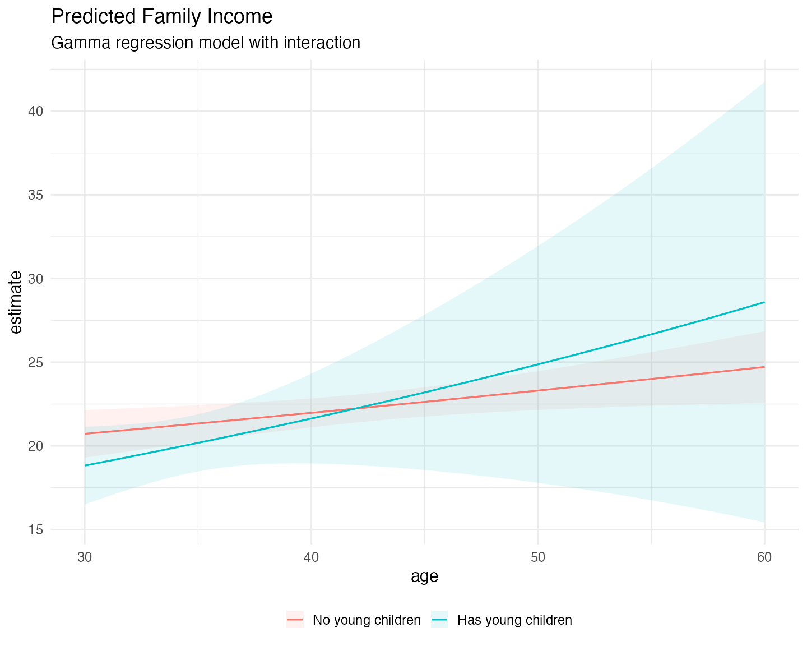
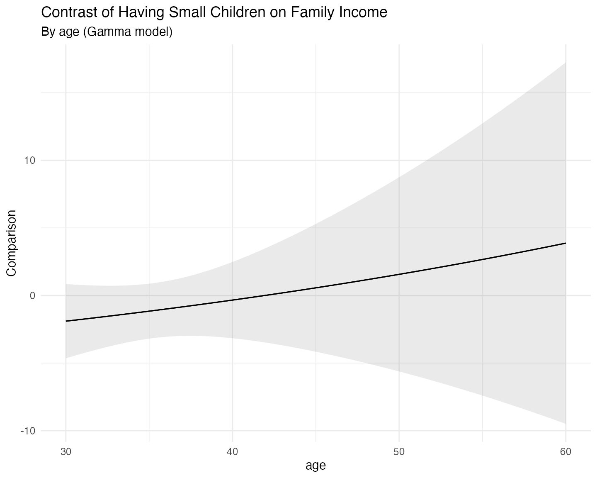

Introduction
One of the strongest features of the mlmodels package is
its unified predict() method. No matter which model you fit
(ml_lm, ml_poisson, ml_negbin,
ml_logit, ml_beta, etc.), you can obtain
predictions and standard errors using the same consistent interface.
This vignette shows how to use predict() directly, then
demonstrates how mlmodels integrates with the excellent marginaleffects
package for average predictions, marginal effects, and more.
The predict() Method
The predict() function in mlmodels returns
an object of class predict.mlmodel, which is a list
composed of two elements:
-
fit: the predicted values. -
se.fit: standard errors calculated via the delta method using analytical gradients (only present ifse.fit = TRUE).
By default, predict() returns in-sample
predictions. It automatically aligns the results to the
original dataset, inserting NA for observations that were
dropped during estimation (due to missing values, subsetting, or invalid
outcome values for the specific model, such as non-positive values in
gamma and lognormal models, or values outside (0,1) in beta
regression).
Basic Usage
data(mroz)
mroz$incthou <- mroz$faminc / 1000
fit <- ml_lm(incthou ~ age + I(age^2) + educ + kidslt6, data = mroz)
# Default: expected value (response)
pred <- predict(fit)
head(pred$fit)
#> [1] 19.74355 18.70671 21.28132 20.98756 23.15382 23.17217
# With standard errors
pred_se <- predict(fit, se.fit = TRUE)
head(data.frame(fit = pred_se$fit, se = pred_se$se.fit))
#> fit se
#> 1 19.74355 0.8506750
#> 2 18.70671 1.2325354
#> 3 21.28132 0.7538523
#> 4 20.98756 0.7605700
#> 5 23.15382 0.9533716
#> 6 23.17217 0.7866816Predicting for Different Models
The usage of the predict() function is the same for
different models, only that different models have different types of
predictions, since they have different parameters.
# Linear model
pred_lm <- predict(fit)
head(pred_lm$fit)
#> [1] 19.74355 18.70671 21.28132 20.98756 23.15382 23.17217
# With standard errors (robust)
pred_lm_se <- predict(fit, vcov.type = "robust", se.fit = TRUE)
head(data.frame(fit = pred_lm_se$fit, se = pred_lm_se$se.fit))
#> fit se
#> 1 19.74355 0.9809821
#> 2 18.70671 0.9734422
#> 3 21.28132 0.9650118
#> 4 20.98756 0.6138107
#> 5 23.15382 1.1163924
#> 6 23.17217 0.7259417
# Poisson model
pois <- ml_poisson(docvis ~ age + educyr + totchr, data = docvis)
pred_pois <- predict(pois)
head(pred_pois$fit)
#> [1] 10.169550 6.266430 6.795981 9.255944 5.471075 5.002632
pred_pois_prob <- predict(pois, type = "P(0)") # Probability of zero
head(pred_pois_prob$fit)
#> [1] 3.831957e-05 1.898996e-03 1.118260e-03 9.554204e-05 4.206705e-03
#> [6] 6.720233e-03
# Negative Binomial (NB2)
nb2 <- ml_negbin(docvis ~ age + educyr + totchr, data = docvis)
pred_nb <- predict(nb2)
head(pred_nb$fit)
#> [1] 10.580216 6.312773 6.843628 9.521127 5.323215 4.818987
pred_nb_var <- predict(nb2, type = "variance")
head(pred_nb_var$fit)
#> [1] 84.17289 32.51184 37.63424 69.11783 23.95239 20.08610
# Beta regression (fractional response)
beta <- ml_beta(prate ~ mrate + age,
scale = ~ sole + totemp,
data = pw401k,
subset = prate < 1)
#> ℹ Improving initial values by scaling (factor = 0.5).
#> ℹ Initial log-likelihood: -282.46
#> ℹ Final scaled log-likelihood: 68.008
pred_beta <- predict(beta)
head(pred_beta$fit)
#> [1] 0.7552359 0.7987456 NA 0.7642674 0.7504521 NA
pred_beta_phi <- predict(beta, type = "phi") # Precision parameter
head(pred_beta_phi$fit)
#> [1] 6.773664 6.684076 NA 6.727120 6.727120 NANotice that the beta model predictions contain NA
values. These correspond to observations that we left out of the
estimation (subset = prate < 1), because the Beta model
only takes true fractional responses.
You can always do out-of-sample predictions, by
passing the full dataset via the newdata argument:
pred_beta <- predict(beta, newdata = pw401k)
head(pred_beta$fit)
#> [1] 0.7552359 0.7987456 0.8084212 0.7642674 0.7504521 0.8538617The NA values are now replaced with predictions for the
previously excluded observations.
For a complete list of supported prediction types for each model family, see the detailed tables in the help page:
?predict.mlmodelComparison with predictions() from
marginaleffects
As we’ve explained before, we have made our package compatible with
marginaleffects, which provides powerful tools for
post-estimation analysis.
There are several distinctions between our predict() and
predictions(), from marginaleffects, that are
worth understanding:
-
predict()uses analytical gradients for its delta-method standard errors and defaults to in-sample predictions, automatically aligning results to the original dataset (insertingNAs for dropped observations). -
predictions()uses numerical gradients for its delta-method standard errors. Withmlmodelsit also defaults to in-sample predictions, but but returns a reduced dataset by default, containing only the observations used in estimation. - Both functions can perform out-of-sample
predictions by passing the full dataset via the
newdataargument. -
predict()provides delta-method standard errors using any variance type supported bymlmodels(oim,opg,robust,boot,jack, etc.). -
predictions()uses the same delta-method approach by default and can take advantage of most of our variance types directly through thevcovargument. The only exception isvcov = "boot", which has a special meaning inmarginaleffects(see the bootstrapping section below). - You can also pre-compute any of our variance
matrices (including bootstrapped and jackknifed), using
vcov(), and pass the resulting matrix topredictions()through thevcovargument. This is especially recommended for bootstrapped and jackknifed standard errors when you plan to compute multiple predictions or marginal effects. -
predictions()also offers additional uncertainty methods — such as estimate bootstrap, simulation (Krinsky-Robb),rsample, etc. — which you can control more through itsinferences()function.
We start illustrating the relationship with a simple prediction with robust standard errors.
# Using our predict() function
our_pred <- predict(fit,
vcov.type = "robust",
se.fit = TRUE)
# Using marginaleffects::predictions()
me_pred <- predictions(fit,
vcov = "robust")
# Compare first 8 observations
comp <- data.frame(
obs = 1:8,
our_fit = our_pred$fit[1:8],
our_se = our_pred$se.fit[1:8],
me_fit = me_pred$estimate[1:8],
me_se = me_pred$std.error[1:8]
)
comp
#> obs our_fit our_se me_fit me_se
#> 1 1 19.74355 0.9809821 19.74355 0.9809816
#> 2 2 18.70671 0.9734422 18.70671 0.9734422
#> 3 3 21.28132 0.9650118 21.28132 0.9650113
#> 4 4 20.98756 0.6138107 20.98756 0.6138107
#> 5 5 23.15382 1.1163924 23.15382 1.1163919
#> 6 6 23.17217 0.7259417 23.17217 0.7259416
#> 7 7 30.29423 1.0659127 30.29423 1.0659127
#> 8 8 23.17217 0.7259417 23.17217 0.7259416As you can see, the predicted values are exactly the same,
since they both come from our predict()
function, and the standard errors are extremely close —
differing only in the later decimal places. This illustrates that for
practical inference purposes, both approaches are equally valid. The
small differences arise because predict() uses analytical
gradients while predictions() uses numerical gradients by
default.
In-Sample and Out-of-Sample Predictions
As mentioned, with mlmodels both predict()
and predictions() default to in-sample
predictions (only using observations that were included in
model estimation).
However, they return different sized data frames:
# Beta model fitted on a subset (prate < 1)
beta <- ml_beta(prate ~ mrate + age,
scale = ~ sole + totemp,
data = pw401k,
subset = prate < 1)
#> ℹ Improving initial values by scaling (factor = 0.5).
#> ℹ Initial log-likelihood: -282.46
#> ℹ Final scaled log-likelihood: 68.008
# Our predict() - returns full length with NAs
our_beta <- predict(beta, se.fit = TRUE, vcov.type = "robust")
# marginaleffects::predictions() - returns reduced dataset
me_beta <- predictions(beta, vcov = "robust")
# Compare frst 8 observations
head(data.frame(Estimate = our_beta$fit, Std.Error = our_beta$se.fit), 8)
#> Estimate Std.Error
#> 1 0.7552359 0.004104833
#> 2 0.7987456 0.004631183
#> 3 NA NA
#> 4 0.7642674 0.003289174
#> 5 0.7504521 0.003836320
#> 6 NA NA
#> 7 0.7482266 0.004075500
#> 8 0.7431659 0.004416452
head(me_beta[, c("estimate", "std.error")], 8)
#>
#> Estimate Std. Error
#> 0.755 0.00410
#> 0.799 0.00463
#> 0.764 0.00329
#> 0.750 0.00384
#> 0.748 0.00408
#> 0.743 0.00442
#> 0.739 0.00444
#> 0.831 0.02209You can see that predict() returns predictions aligned
to the original dataset, inserting NA for observations that
were dropped during estimation, whereas predictions() is
missing those observations, returning a data frame containing only the
observations actually used in the model.
Out-of-Sample Predictions
To obtain predictions on the full original dataset (out-of-sample),
simply pass the complete data via the newdata argument in
either function:
# Out-of-sample with our predict()
our_full <- predict(beta, newdata = pw401k, se.fit = TRUE, vcov.type = "robust")
# Out-of-sample with marginaleffects
me_full <- predictions(beta, newdata = pw401k, vcov = "robust")
# Compare first 8 observations
comp <- data.frame(
obs = 1:8,
our_fit = our_full$fit[1:8],
our_se = our_full$se.fit[1:8],
me_fit = me_full$estimate[1:8],
me_se = me_full$std.error[1:8]
)
comp
#> obs our_fit our_se me_fit me_se
#> 1 1 0.7552359 0.004104833 0.7552359 0.004104833
#> 2 2 0.7987456 0.004631183 0.7987456 0.004631184
#> 3 3 0.8084212 0.004472564 0.8084212 0.004472565
#> 4 4 0.7642674 0.003289174 0.7642674 0.003289174
#> 5 5 0.7504521 0.003836320 0.7504521 0.003836321
#> 6 6 0.8538617 0.006884965 0.8538617 0.006884966
#> 7 7 0.7482266 0.004075500 0.7482266 0.004075501
#> 8 8 0.7431659 0.004416452 0.7431659 0.004416453Once more they’re both aligned and close.
Aligning marginaleffects in-sample
predictions
If you want in-sample predictions from marginaleffects
but aligned to the original dataset (with NAs for dropped
observations), you can do the following:
# predict as if out-of-sample
me_outin <- predictions(beta, newdata = pw401k, vcov = "robust")
# replace the values for the observations that weren't used with NA
me_outin[!beta$model$sample, ] <- NA
# Compare first 8 observations with our in-sample
comp <- data.frame(
obs = 1:8,
our_fit = our_beta$fit[1:8],
our_se = our_beta$se.fit[1:8],
me_fit = me_outin$estimate[1:8],
me_se = me_outin$std.error[1:8]
)
comp
#> obs our_fit our_se me_fit me_se
#> 1 1 0.7552359 0.004104833 0.7552359 0.004104833
#> 2 2 0.7987456 0.004631183 0.7987456 0.004631184
#> 3 3 NA NA NA NA
#> 4 4 0.7642674 0.003289174 0.7642674 0.003289174
#> 5 5 0.7504521 0.003836320 0.7504521 0.003836321
#> 6 6 NA NA NA NA
#> 7 7 0.7482266 0.004075500 0.7482266 0.004075501
#> 8 8 0.7431659 0.004416452 0.7431659 0.004416453Every mlmodel object stores a logical vector called
sample inside model$sample. This vector
indicates which observations from the original dataset were actually
used during model estimation (TRUE) and which were dropped
(FALSE).
Bootstrap Inference
There are two main approaches to bootstrap-based inference:
- Bootstrapped variance + delta method - You compute a bootstrapped variance-covariance matrix, and use it calculate standard errors and confidence intervals (similar to how you do with the coefficients of the estimation).
- Full bootstrap of the quantity - You refit the model on many bootstrap samples, compute the prediction (or marginal effect) for each sample’s estimation, and then derive confidence intervals from the percentiles of that distribution.
marginaleffects uses the second
approach (full bootstrap of the predictions) when you specify
vcov = "boot" in any of its predicting functions, or when
you use inferences(method = "boot"). This method is
computationally heavier, but produces more robust confidence
intervals.
Since mlmodels also uses the string "boot"
as its option to get a bootstrapped variance, the only way to obtain
bootstrapped standard errors (approach 1) with
marginaleffects, is to pre-compute the
bootstrapped variance-covariance matrix with vcov(), and
pass it to predictions().
## 1st approach (Bootstrapped variance)
# pre-compute the variance on the linear model (low number of repetitions to make it fast)
v_boot <- vcov(fit, type = "boot", repetitions = 200, seed = 123, progress = FALSE)
# use it with predictions()
boot_delta <- predictions(fit, vcov = v_boot)
## 2nd approach (Bootstrapped prediction)
boot_pred <- predictions(fit) |>
inferences(method = "boot", R = 200) # Inferences allows you to set the repetitions.
# The estimate is the same in both methods
comp <- data.frame(
obs = 1:8,
Estimate = boot_delta$estimate[1:8],
Delta_Low = boot_delta$conf.low[1:8],
Delta_High = boot_delta$conf.high[1:8],
Pred_Low = boot_pred$conf.low[1:8],
Pred_High = boot_pred$conf.high[1:8]
)
comp
#> obs Estimate Delta_Low Delta_High Pred_Low Pred_High
#> 1 1 19.74355 17.74283 21.74428 17.68970 22.15990
#> 2 2 18.70671 16.80978 20.60364 16.94558 20.72125
#> 3 3 21.28132 19.35007 23.21257 19.26963 23.44030
#> 4 4 20.98756 19.79893 22.17619 19.74013 22.31944
#> 5 5 23.15382 20.90551 25.40214 21.10759 25.54654
#> 6 6 23.17217 21.69891 24.64542 21.69350 24.67788
#> 7 7 30.29423 28.14842 32.44003 28.38837 32.41074
#> 8 8 23.17217 21.69891 24.64542 21.69350 24.67788In this example the confidence intervals from both methods are very similar. In general, however, the full bootstrap approach (bootstrapping the predictions themselves) is more robust when the distributional assumptions of your model may not hold perfectly. This extra robustness comes at the cost of higher computational time compared to using a bootstrapped variance matrix with the delta method.
marginaleffects gives you the flexibility to choose
whichever approach best suits your needs and computational budget.
Interaction Effects and Plotting
One of the most useful features of marginaleffects is
its ability to visualize how effects vary across covariates. Here we fit
a Gamma model with an interaction between a binary indicator
(minors = has young children) and a continuous variable
(age):
# Create binary variable
mroz$minors <- factor(mroz$kidslt6 > 0,
levels = c(FALSE, TRUE),
labels = c("No young children", "Has young children"))
# Gamma regression with interaction
fit_gamma <- ml_gamma(incthou ~ age * minors + educ + hushrs,
data = mroz)
summary(fit_gamma, vcov.type = "robust")
#>
#> Maximum Likelihood Model
#> Type: Homoskedastic Gamma Model
#> ---------------------------------------
#> Call:
#> ml_gamma(value = incthou ~ age * minors + educ + hushrs, data = mroz)
#>
#> Log-Likelihood: -2762.37
#>
#> Wald significance tests:
#> all: Chisq(5) = 122.341, Pr(>Chisq) = < 1e-8
#>
#> Variance type: Robust
#> ---------------------------------------
#> Estimate Std. Error z value Pr(>|z|)
#> Value (incthou):
#> value::(Intercept) 1.601236 0.165711 9.663 < 2e-16 ***
#> value::age 0.005874 0.002310 2.543 0.011000 *
#> value::minorsHas young children -0.337768 0.342667 -0.986 0.324279
#> value::educ 0.082387 0.008567 9.617 < 2e-16 ***
#> value::hushrs 0.000117 0.000035 3.302 0.000959 ***
#> value::age:minorsHas young children 0.008056 0.009556 0.843 0.399215
#> Scale (log(nu)):
#> scale::lnnu 1.594196 0.067184 23.729 < 2e-16 ***
#> ---------------------------------------
#> Signif. codes: 0 '***' 0.001 '**' 0.01 '*' 0.05 '.' 0.1 ' ' 1
#> ---
#> Number of observations:753 Deg. of freedom: 747
#> Pseudo R-squared - Cor.Sq.: 0.1545 McFadden: 0.02528
#> AIC: 5538.74 BIC: 5571.10
#> Shape Param.: 4.92 - Coef.Var.: 0.45Now we can use plot_predictions() to see the predicted
response for both groups at different ages:
# Load ggplot2 to plot with marginaleffects
library(ggplot2)
plot_predictions(fit_gamma,
condition = c("age", "minors"),
vcov = "robust") +
labs(title = "Predicted Family Income",
subtitle = "Gamma regression model with interaction",
color = "",
fill = "") +
theme_minimal(base_size = 15) +
theme(legend.position = "bottom")
And we can do the same for the marginal effects:
plot_comparisons(fit_gamma,
variables = "minors",
condition = "age",
vcov = "robust") +
labs(title = "Contrast of Having Small Children on Family Income",
subtitle = "By age (Gamma model)") +
theme_minimal(base_size = 15)
Concluding Remarks
This vignette has demonstrated the unified predict()
method provided by mlmodels and its strong integration with
the marginaleffects
package.
Key takeaways include:
-
predict()offers analytical gradients and defaults to in-sample predictions with proper alignment (including NAs for dropped observations). -
predictions(), frommarginaleffects, also defaults to in-sample predictions withmlmodels, and uses numerical gradients that provide very precise standard erors, so for most applications it will be equivalent topredict(). - Both functions support out-of-sample predictions by supplying the
full original dataset via the
newdataargument. - You can obtain aligned in-sample predictions from
predictions()using thesamplelogical vector stored in everymlmodelobject. - The integration allows you to choose between fast delta-method
standard errors (using our variance estimators), and more robust full
bootstrap inference, or other methods of inference, via
inferences(). -
marginaleffectsfurther complementspredict()with powerful tools for average predictions, marginal effects, and interactions, and visualization.
Together, they provide a flexible and consistent workflow for
post-estimation analysis across all model families supported by
mlmodels.
For more details on specific prediction types, see
?predict.mlmodel. For more information about
marginaleffects, consult its excellent documentation.
Happy modeling!